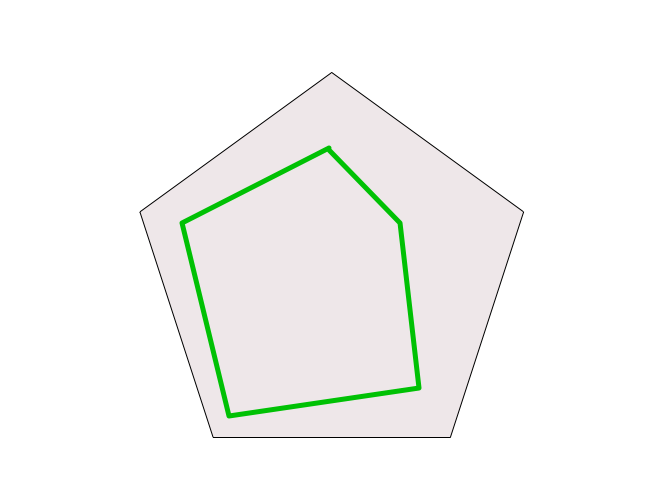
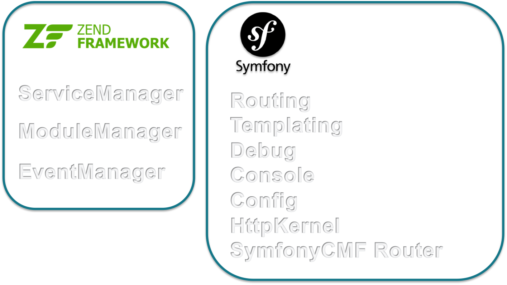
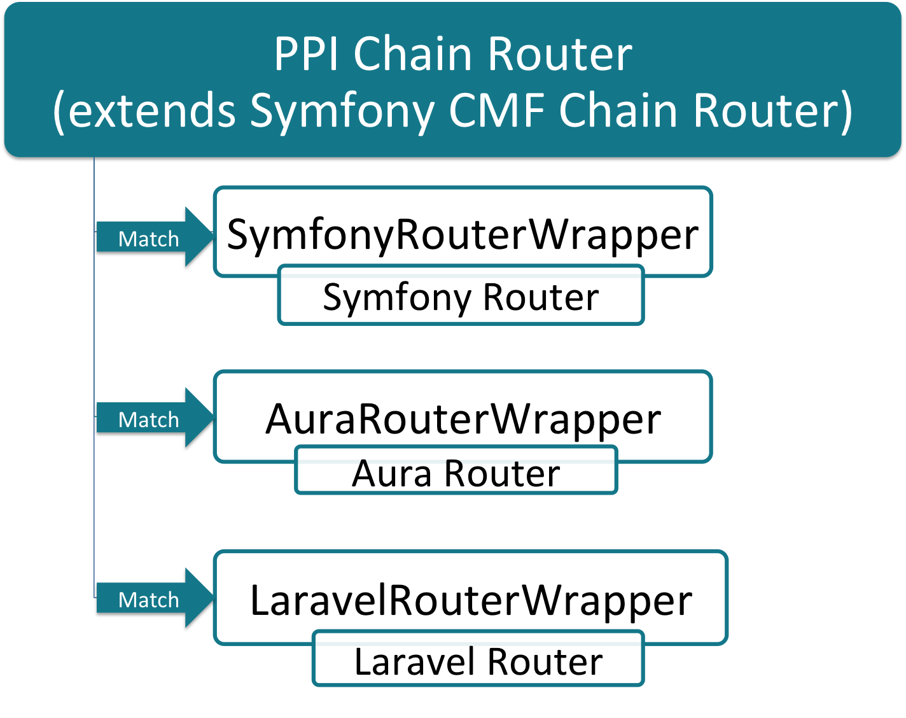

The PHP Framework Engine
Unleashing Frameworks

Paul Dragoonis
- Full-Stack Software Consultant & QA Analyst
- From PHP-FIG, PHP Core / Extensions, PHP.net
- Lead developer of PPI
- Using PHP since 2001
Message of PPI
Frameworks are very powerful!
but.. they come at a cost
Amount of Cost = how you use and depend on frameworks
Today
Showing you how to unleash the power of not just 1 framework, but many!
How that benefits you, your team/company/project/customer
What are the costs?
Vendor lock-in! (technical debt)
This means:
Your app is tightly coupled to one framework
Hard to switch to a new framework
Hard to move code between apps, on different frameworks
What is P.P.I.?
What does PPI stand for? Not much, but we can be creative!
- PHP
- Phramework

- Interoperability
What is PPI?
It's not a framework
It's a framework delivery engine
It delivers core parts of frameworks to your app
Individually, to the features of your app
What you can use PPI as?
An engine that you can boot() up.
Inside existing/legacy apps, to modernise them
Inside CMS' like wordpress
A typical standalone application with dispatch() for HTTP
You can middleware to it this ^^^
Typical problem with frameworks
Common Path of a project
1. customer tells you what they want (kind of ;-)
2. you choose a framework/toolkit that suits that project
3. you build it
What happens next?
4. customer changes their mind on what they want
5. the tool you chose in the beginning, is no longer the correct one
6. you can't switch because it's too difficult to switch to a different tool.
It's not your fault!
You're not psychic! You cannot predict the future
but, you can prepare for it :-)
How?
Building framework apps with PPI
PPI prepares you for change.
Because, it's designed for change.
How does PPI help you with change?
Your app code belongs to you, not to your framework.
PPI let's you make framework decisions on a per-feature basis, not per-app
You can change your features independently (microservices)
When your features grow / evolve / change, you can change with them
Choosing a framework
Symfony
Zend

Laravel
Phalcon
Zend vs Symfony
Zend vs Symfony vs Laravel
So many choices! Which one to choose?
Which one to choose?
The one(s) that best suite your requirements / experience / project
Using Frameworks Directly
Using Frameworks In PPI
Two features with different requirements
One size doesn't fit all!
Feature A (backend cms)
Feature B (frontend)
Questions?
Powered by solid components

PSR Interfaces
PPI is a PSR-aware framework
PSR-0, PSR-1, PSR-2, PSR-3, PSR-4, PSR-7
What's inside the PPI Engine?
composer.json:"require": {
"psr/log": "~1.0",
"psr/http-message": "^0.11",
"symfony/config": "~2.7",
"symfony/console": "~2.7",
"symfony/debug": "~2.7",
"symfony/finder": "~2.7",
"symfony/yaml": "~2.7",
"zendframework/zend-eventmanager": "~2.3",
"zendframework/zend-modulemanager": "~2.3",
"zendframework/zend-servicemanager": "~2.3",
"symfony/framework-bundle": "~2.7",
"symfony/http-foundation": "~2.7",
"symfony/http-kernel": "~2.7"
}
When you include PPI
composer.json:
"require": {
"ppi/framework": "~2.1"
}
Booting up PPI
<php
$app = new PPI\App(['env' => 'prod']);
$app->loadConfig($app->getEnvironment().'/app.yml');
$app->boot();
What's inside the app.yml file
app.yml
modules:
- Framework
- CmsModule
- FrontendModule
- ApiModule
Modules (features)
Register your module's namespace
<?php
namespace PropertyModule;
class Module extends AbstractModule
{
public function getAutoloaderConfig()
{
return array(
'Zend\Loader\StandardAutoloader' => array(
'namespaces' => array(
__NAMESPACE__ => __DIR__ . '/src/'
),
),
);
}
}
Module configuration
<?php
namespace PropertyModule;
class Module extends AbstractModule
{
public function getConfig()
{
return $this->loadConfig(__DIR__ . '/../resources/config/config.yml');
}
}
Extended config
app.yml
imports:
- { resource: settings.yml }
monolog:
handlers:
main:
type: stream
path: %app.logs_dir%/%app.environment%.log
level: debug
Services
Simple & lightweight, using ZF2 ServiceManager
<?php
namespace PropertyModule;
class Module extends AbstractModule
{
public function getServiceConfig()
{
return ['factories' => [
'property.images.service' => PropertyImagesFactory::class,
'property.branch.service' => PropertyBranchesFactory::class
'property.seller.service' => function ($sm) {
return new SellerService($sm->get('Doctrine\ORM\EntityManager'));
}
]];
}
}
A service factory
<?php
namespace PropertyModule\Factory;
use Zend\ServiceManager\ServiceLocatorInterface;
use Zend\ServiceManager\FactoryInterface;
use PropertyModule\Service\LetterService;
class PropertyLettersFactory implements FactoryInterface
{
public function createService(ServiceLocatorInterface $sm)
{
return new LetterService($sm->get('Doctrine\ORM\EntityManager'));
}
}
Calling the service
<?php
$branchService = $app->getService('property.branch.service');
var_dump($branchService); // object(LetterService)
Powerful templating!
You only need to add what you need
composer.json
composer require ppi/smarty-module
composer require ppi/twig-module
composer require ppi/mustache-module
composer require ppi/plates-module
composer require ppi/latte-module
Defining engines to use
app.yml
modules:
- Framework
- CmsModule
- FrontendModule
- ApiModule
framework:
templating:
engines: ["php", "smarty", "twig", "mustache", "plates", "latte"]
Rendering templates
PropertyModule
|
├── Module.php
├── resources
│ ├── config
│ │ └── config.yml
│ └── views
│ └── index
│ └── index.html.twig
│ └── index.html.smarty
│ └── index.html.plates
Rendering templates
<?php
$output = $app->getService('templating')
->render('PropertyModule:index:index.html.php');
$output = $app->getService('templating')
->render('PropertyModule:index:list.html.twig');
Need Databases Bindings?
LaravelDB, Eloquent, DoctrineDBAL, ZendDB
$ composer require ppi/datasource-module
$ composer require zend/doctrine-orm-module
Doing HTTP
Need routing?
composer.json
composer require ppi/fastroute-routing
composer require ppi/laravel-routing
composer require ppi/aura-routing
composer require ppi/symfony-routing
Routing
<?php
class Module extends AbstractModule
{
public function getRoutes() {
return $this->loadAuraRoutes(__DIR__ . '/resources/routes/aura.php');
return $this->loadSymfonyRoutes(__DIR__ . '/resources/routes/symfony.yml');
return $this->loadLaravelRoutes(__DIR__ . '/resources/routes/laravel.php');
return $this->loadFastRouteRoutes(__DIR__ . '/resources/routes/fastroute.routes.php');
}
}
Fully native routes, no abstraction!
Symfony Router
Homepage:
pattern: /
defaults: { _controller: "PropertyModule:Index:index"}
Aura Router
/*
* @var Aura\Router\Router $router
*/
$router
->add('Homepage', '/')
->addValues(array(
'controller' => 'PropertyModule\Controller\Index',
'action' => 'indexAction'
));
FastRoute Router
/**
* @var \FastRoute\RouteCollector $router
*/
$router->addRoute('GET', '/PropertyModule/index', 'PropertyModule\Controller\Index');
// Add __invoke() to your controller for this one! ^^
Laravel Router
/*
* @var \Illuminate\Routing\Router $router
*/
$router->get('/', [
'as' => 'Homepage',
'uses' => 'PropertyModule\Controller\Index@indexAction'
]);
Controllers
composer.json:
<?php
namespace PropertyModule\Controller;
use PPI\Framework\Module\Controller as BaseController;
use PPI\Framework\Http\Request;
class Mycontroller extends BaseController
{
public function indexAction(Request $request)
{
if ('POST' === $request->getMethod()) { }
$someService = $this->getService('property.service');
$someParams = $someService->getSomeParams();
return $this->render('PropertyModule:index:index.html.twig',
compact('someParams')
);
}
}
Symfony routes with params
DocsIndex:
pattern: /docs/{ver}/{page}.html
defaults: { _controller: "PropertyModule:Docs:index", ver: "2.0"}
Controllers
Symfony ControllerArgumentResolver
composer.json:
<?php
namespace PropertyModule\Controller;
use PPI\Framework\Module\Controller as BaseController;
use PPI\Framework\Http\Request;
class Index extends BaseController
{
public function indexAction(Request $request, $ver, $page = 1)
{
if ('POST' === $request->getMethod()) {
// do POST stuff
}
return $this->render('PropertyModule:index:index.html.twig',
compact('ver', 'page')
);
}
}

Doing HTTP - Middleware
<php
$app = new PPI\App(['env' => 'prod']);
$app->loadConfig($app->getEnvironment().'/app.php');
$app->boot();
$request = Request::create('/');
$response = new Response();
$response = $app->dispatch($request, $response);
$response->send();
// or
$content = $response->getContent();
Doing HTTP - Standalone
<php
$app = new PPI\App(['env' => 'prod']);
$app->loadConfig($app->getEnvironment().'/app.php');
$app->boot()->run();
Use your existing app as a container
Using PPI as a container, in existing systems
public/index.php
$loader = require_once '/path/to/ppi/app/init.php';
$ppiApp = new PPI\Framework\App([
'rootDir' => __DIR__ . '/../dashboard/app'
]);
$ppiApp->loadConfig($ppiApp->getEnvironment() . '/app.yml');
$ppiApp->boot();
$container = $ppiApp->getServiceManager();
// Register your container, globally
ppi($container);
Using the container
function ppi($id)
{
static $container;
if ($id instanceof ContainerInterface) {
$container = $id;
return;
}
return $container->get($id);
}
Using the container
<?php
get_header();
global $wp_query;
?>
<h1>Property List</h1>
<?php
$service = ppi('property.service');
$criteria = new PropertyModule\Criteria();
if(isset($_GET['num_bedrooms'])) {
$criteria->setNumBedrooms($_GET['num_bedrooms']);
}
$properties = $service->findProperties($criteria);
foreach($properties as $property):
Questions?
Using PPI Skeleton App
PPI website .. download .. skeleton app
PPI docs .. installation
$ vagrant up
Skeleton App

$ app/console

Console commands
$ app/console
PPI version 2.1.1-DEV
Available commands:
assets
assets:install Installs modules public assets under a public directory
cache
cache:clear Clears the cache
config
config:debug Dumps the configuration in use
debug
debug:router Displays current routes for an application
module
module:create Create a module
module:list Displays information about the currently loaded modules
router
router:debug Displays current routes for an application
router:match Helps debug routes by simulating a path info match
service-manager
service-manager:debug Displays current services for an application
Module create wizard
$ app/console module:create PHPMiNDSModule
Where is the modules dir?
[1] /Users/dragoonis/code/ppi/skeletonapp/modules
>
Choose your templating engine [php]
[1] php
[2] twig
[3] smarty
[4] plates
[5] latte
> 2
Choose your routing engine [symfony]
[1] symfony
[2] aura
[3] laravel
[4] fastroute
> 4
Module create wizard
Created module successfully
Name: PHPMiNDSModule
Routing: fastroute
Templating: twig
Path: /Users/dragoonis/code/ppi/skeletonapp/modules/PHPMiNDSModule
This module is not enabled.
Enable it in config[modules] key
Twig is not an enabled templating engine.
Add twig it in config[framework][templating][engines] key
Twig doesn't appear to be loaded.
Run: composer require ppi/twig-module
FastRoute Router doesn't appear to be loaded.
Run: composer require ppi/fast-route
Experimental Live Demo
Progress
PPI is ready for you to build projects in.
We are now in version 2.1 - give it a spin!
ppi.io
Talk to us! Get involved!
ppi.io/chat
Closing Notes
PPI prepares you for change, because it's DESIGNED for change.
Be in control of your own architecture, change when you need to
Ultimately, by using PPI you're changing frameworks from this ...

Thank you PHPMiNDS!
- Please leave me feedback! joind.in/talk/fba23
- Gitter: ppi.io/chat
- Documentation: docs.ppi.io
- T: @dr4goonis / @ppi_framework
- E: dragoonis@php.net / paul@ppi.io